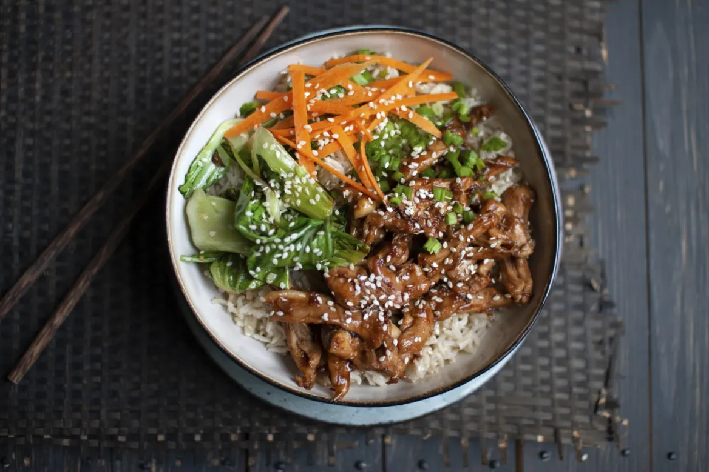

Teriyaki Donburi Bowl

A traditional dish, donburi is a big bowl of steamed rice that is stir-fried with chicken, beef or prawn and mixed vegetables. served with a pickled side
Fresh chicken in a spicy teriyaki sauce served with sticky white rice, shredded carrots, seasonal green, scallions + kimchi
Ingredients
- 2 Chicken Thighs
- 10½ oz short grain rice
- handful of pea shoots
- ½ carrot, grated or julienne
- 1 scallion, chopped
- 2 tbsp teriyaki sauce
- 1½ oz kimchee
Steps
- marinade chicken thighs for 1 hour before placing in a hot oven until cooked through
- cook rice whilst chicken is cooking
- add rice to bowl, and place sliced chicken gently on top
- drizzle teriyaki sauce over the chicken
- add fresh pea shoots, carrot & scallions to dish
- garnish with sesame seeds and serve